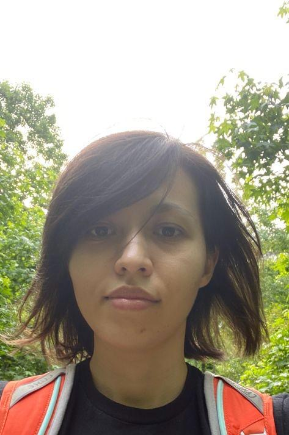
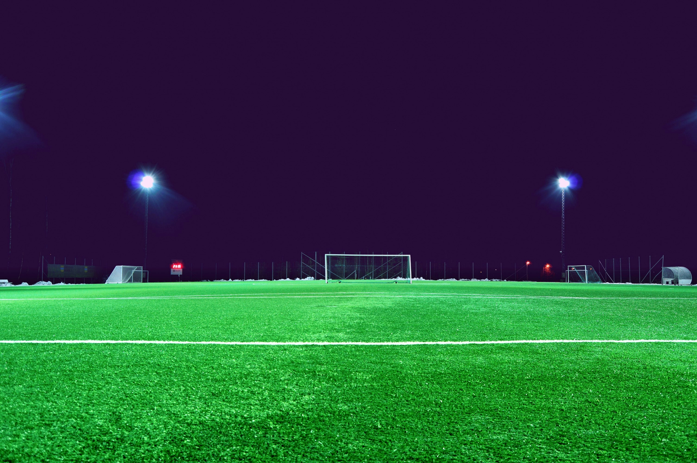
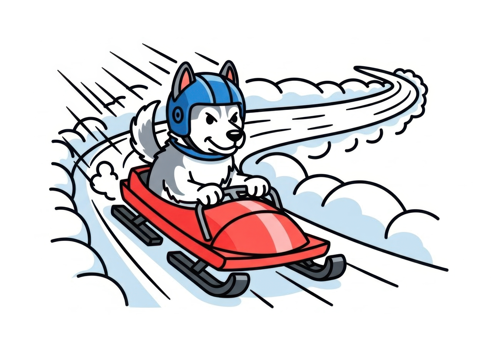

About Me

Hello Everyone! Welcome to my website. My name is Diana Ruiz. I'm pursuing a website development degree at Gwinnett Technichal College. My goal is to become a freelance website developer for small buisnesses. When I'm not coding, I enjoy playing guitar, catching a hockey game, or going outdoors. Use the navigation links to view my work. Thanks for visiting!


Get In Touch
Email:druiz6760@student.gwinnetttech.edu
Google Map